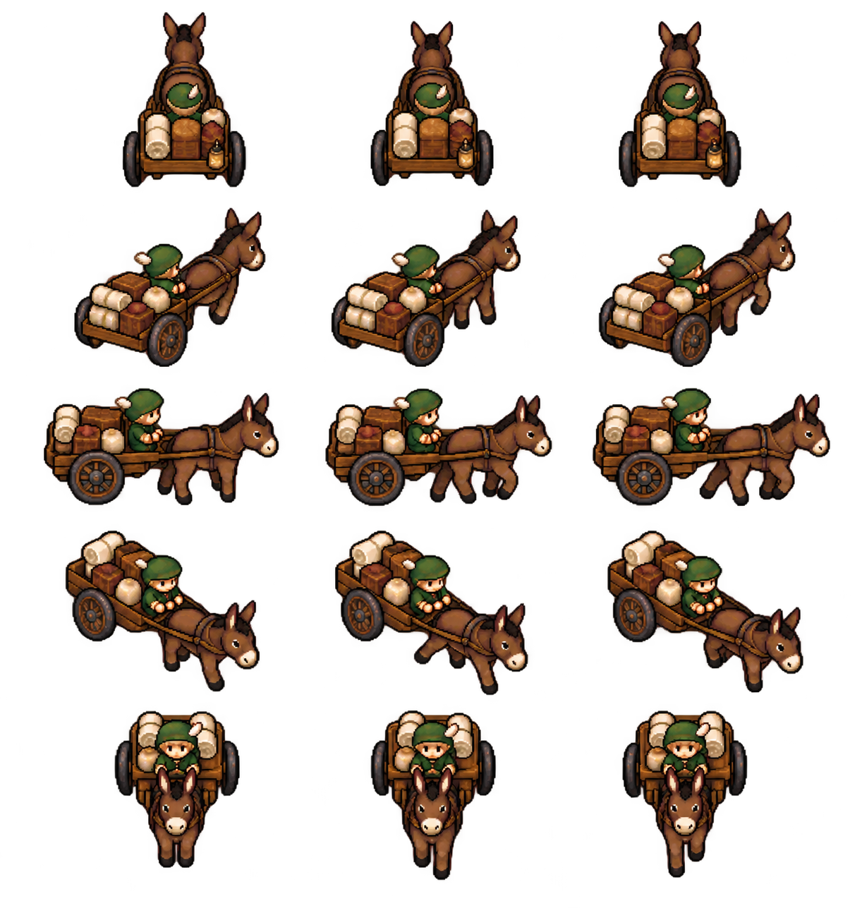

Présentation
Sprite de caravane
Reconnaître un convoi et distinguer sa représentation de son chargement.
Comprendre ce que cela implique
La charrette chargée est un symbole générique : le nombre de caisses dessinées ne permet pas de déduire le stock transporté ni la force de l’escorte. Il faut ouvrir la fiche officielle pour les connaître.
La marche de l’âne suit la trajectoire reçue. Tourner la caméra ou agrandir le sprite ne change ni son commerce ni son déplacement.

Dans cet article
Détails de référence
Texte de référence mis en forme et conservé dans l’historique de cet article. Les paragraphes datés peuvent décrire une évolution ou une étape antérieure.
Les groupes autonomes de type convoy sont affichés par une caravane JRPG : un âne brun tire une charrette de bois chargée de caisses, de sacs et de toile, avec un marchand au bonnet vert. Cette apparence générique ne représente pas le contenu exact du chargement ni l'effectif de l'escorte.
Le sprite reste droit lorsque la carte s'incline et suit l'échelle du zoom. Ses huit orientations sont relatives à la caméra ; SW, W et NW reprennent SE, E et NE par miroir. Trois poses donnent un pas simple à l'âne lorsque l'état officiel du convoi indique un déplacement. La petite ombre ovale commune aux personnages est retirée pour éviter de donner l’impression que la charrette flotte ; les roues et les sabots constituent son contact visuel avec le sol. Le marqueur reste sélectionnable pour ouvrir les interactions existantes.
L'affichage interpole la trajectoire reçue du serveur. Il ne modifie ni position officielle, ni vitesse, ni commerce, ni combat, ni détection. Les éclaireurs et les bandits disposent aussi de sprites dédiés (voir autonomous-group-map-sprites.md). Les autres types conservent leurs marqueurs existants.
Création du visuel
Outil intégré imagegen, alpha transparent, fichier app/assets/groups/caravan-jrpg-walk-v1.png. Les pixels de la planche sont conservés ; seuls les rectangles de présentation sont mesurés.
Prompt :
Production transparent sprite sheet, 16-bit JRPG chunky pixel art matching small chibi heroes. Medieval trading caravan: one small brown pack donkey pulling one compact two-wheel wooden cart loaded with crates, sacks and rolled cream canvas; a tiny green-capped merchant seated on cart. Exactly three columns by five rows: idle, walking left leg forward, walking right leg forward; orientations north, north-east, east, south-east, south. Western views mirrored in code. Same scale and central anchor. No text, labels, grid, scenery or ground shadows; truly transparent background. Compact slightly elevated orthographic view, hard square pixels, dark outlines.
Une correction imagegen a ajouté de la marge transparente pour rendre les oreilles de l'âne entièrement visibles sur la première ligne.